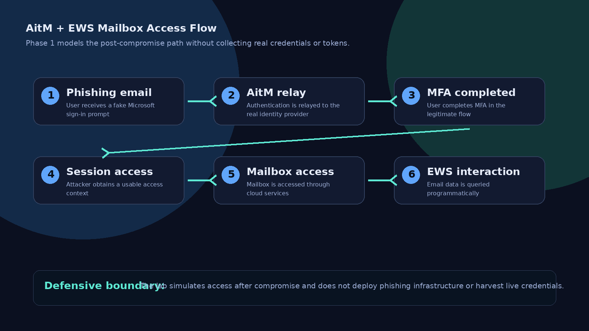
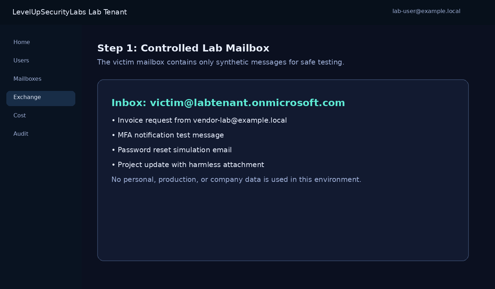
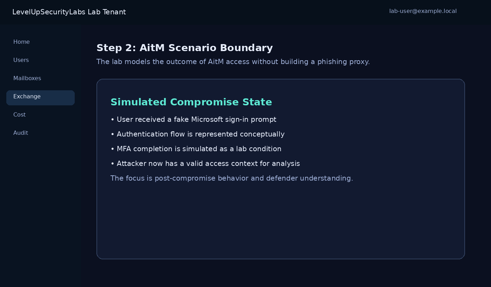
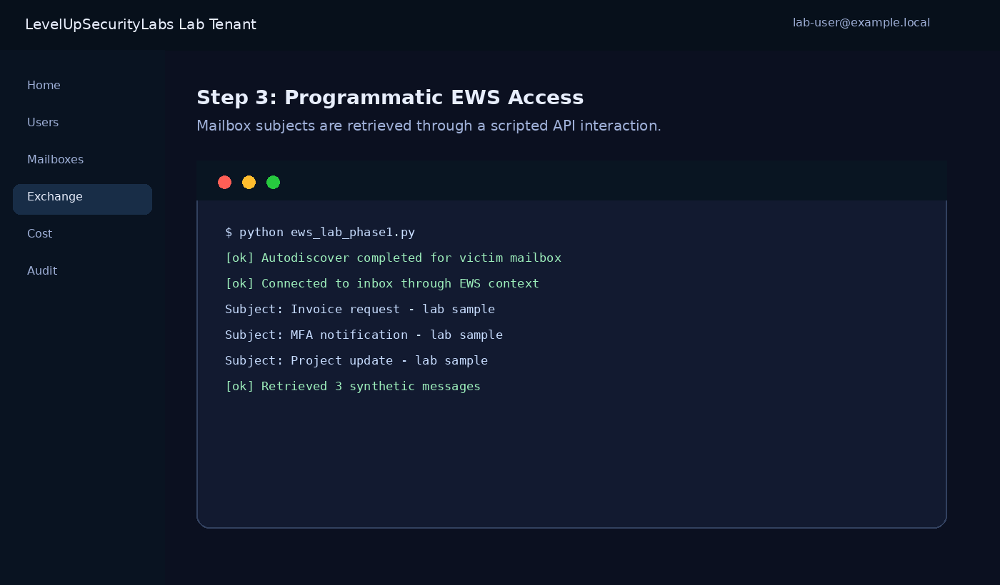
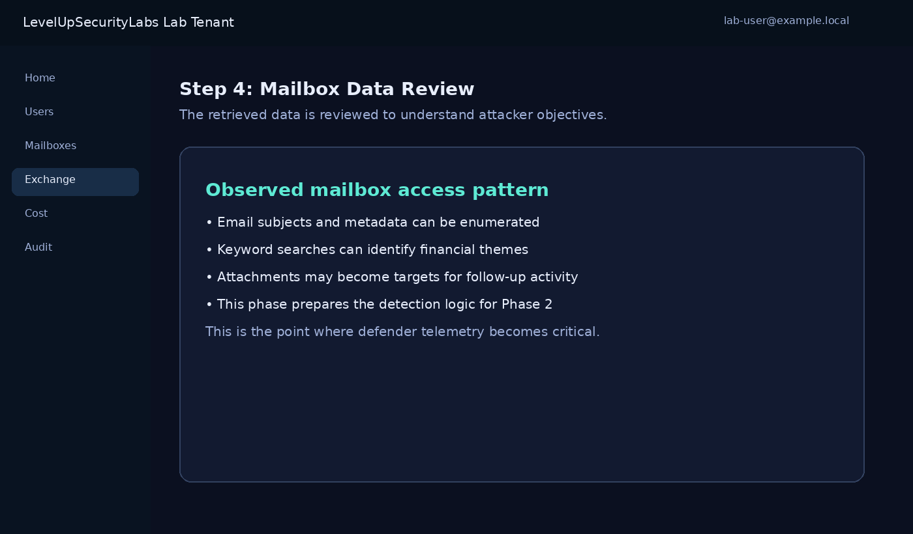

MFA is not the finish line
AitM attacks can target session access, which means defenders need visibility beyond password-based compromise.
Simulating AitM Credential Theft and Mailbox Access in a controlled Microsoft 365 lab. This walkthrough focuses on what happens after access is obtained: mailbox interaction, API-style access patterns, and the defender mindset needed for Phase 2 detection.
This lab does not deploy a phishing proxy, collect real credentials, capture live tokens, or target any real user. The AitM portion is modeled as a scenario condition so the lab can focus on defensive understanding of post-compromise mailbox behavior.
The lab models a common business email compromise path: the user is lured into an AitM authentication flow, access is established, and mailbox data is queried through an API-style workflow.

Use a dedicated lab tenant and synthetic users only. Populate the victim mailbox with harmless sample messages such as fake invoices, project updates, and test MFA notifications.
The lab begins after the user has interacted with a phishing lure and a valid access context exists. This keeps the scenario realistic without building credential-theft infrastructure.
Exchange Web Services historically allowed applications to interact with mailbox data programmatically. In Exchange Online, Basic authentication is no longer supported for EWS, and OAuth-based access is required for supported EWS application workflows.
// Safe lab pseudocode
connect_to_lab_mailbox(access_context)
select_folder("Inbox")
retrieve_message_subjects(limit=10)
review_results_for_sensitive_themes()
Focus on attacker objectives rather than credential theft mechanics. Common mailbox targets include financial language, vendor threads, password resets, MFA notifications, invoices, attachments, and executive communication patterns.
Capture what should become detection logic later: unusual mailbox access patterns, API-driven activity, impossible travel, unusual user agents, new inbox rules, and mailbox access following suspicious authentication.
The following sanitized visuals show the safe lab flow without exposing personal, production, or tenant-specific information.

The mailbox contains synthetic messages only, giving the lab realistic content without using real user data.

The AitM portion is represented as a simulated compromise condition so the lab stays defensive and controlled.

The simulated API workflow retrieves message subjects from the lab mailbox without using Outlook or a browser session.

Retrieved mailbox data is reviewed from the attacker’s perspective to understand what defenders should detect.
AitM attacks can target session access, which means defenders need visibility beyond password-based compromise.
Email contains business context, financial conversations, reset links, attachments, and trust relationships.
Mailbox access may not look like a normal user browsing Outlook, making audit and behavioral analysis critical.
Phase 2 will focus on detection: audit logs, mailbox access telemetry, suspicious sign-ins, inbox rule creation, and KQL logic that helps identify post-phishing mailbox abuse.